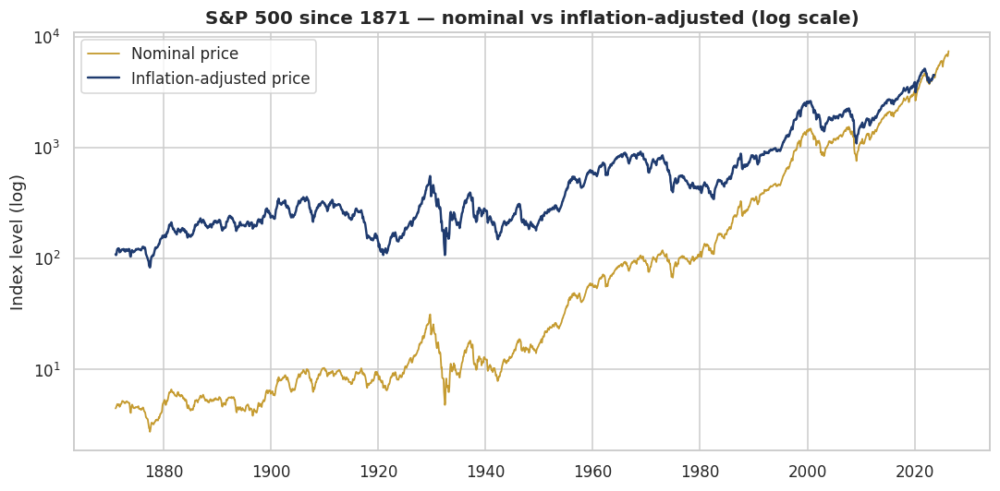
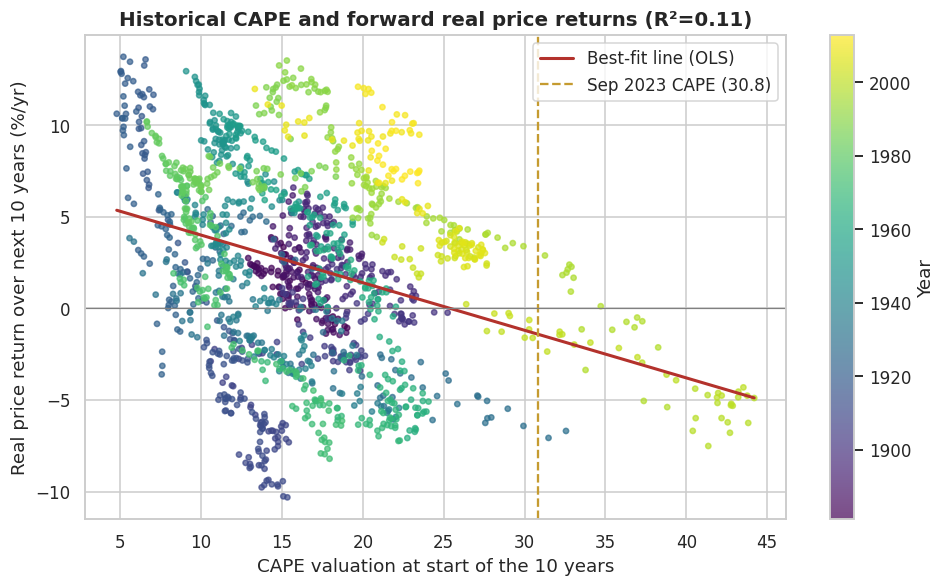
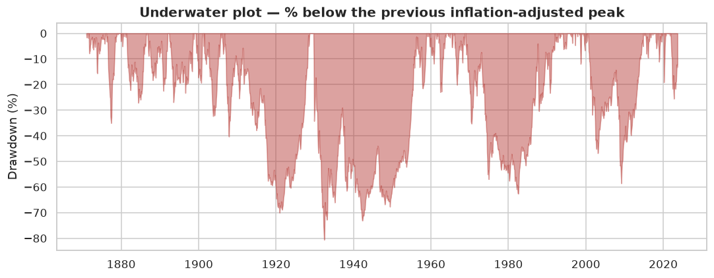
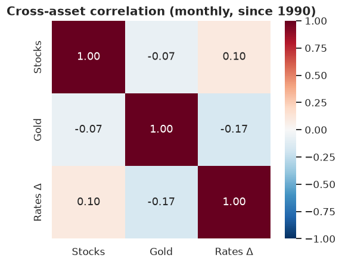

US Stock-Market Valuation & Risk
A historical test of starting valuation and the following decade of real price returns.
Higher CAPE was associated with lower subsequent real price returns. The relationship was weaker in a non-overlapping sample. The last valid CAPE in the extract is from September 2023.
Valuation & Risk dashboard
Explore the historical series by decade. The valuation extract ends in September 2023.
- 30.8September 2023 CAPE
- −80.6%Worst drawdown
- ~2.5%/yrReal growth
- ≈ 0Stock–gold corr.
Built in Tableau on a star-schema export (fact_market_monthly + dim_year + dim_sector), published on Tableau Public.
The question
Every investor eventually asks whether the market is "expensive", and whether that should change what they expect. This project tackles it empirically: across more than 150 years of real data, does valuation predict long-run returns, and how much downside risk do you take on by holding equities?
The data
Real, public market data spanning a century and a half: Robert Shiller's price/earnings/CAPE series, plus CBOE (VIX) and LBMA (gold) data, pulled with a reproducible script. The main cleaning decision: recent months store 0.0 as a placeholder for fundamentals that aren't reported yet, so treating those as real zeros would distort every average. I converted them to missing. This is long-horizon data with all the usual problems: regime changes, gaps, and inflation adjustment all have to be handled before any model is trustworthy.
Approach & method
- Built a forward 10-year real-return series and loaded the cleaned monthly table into SQLite, using a
LAGwindow function to rank the best and worst calendar years. - Regressed forward returns on starting valuation (CAPE) using OLS in
statsmodels, reporting p-values and R². - Quantified the long-run real growth rate, the maximum drawdown on record, and the stock–gold correlation as a diversification check.
What I found
Once inflation is removed, the index's price has grown only about 2.5% a year. Most of the headline growth comes from inflation and reinvested dividends (neither is in this price-only series), so return expectations should be set accordingly.

Starting valuation has tracked future returns: months with a higher CAPE were followed by lower real returns over the next decade. The signal is real but moderate: it explains only about a tenth of the variation (R² = 0.11), and the eye-catching p-value (~1e-40) is inflated by overlapping 10-year windows, which aren't independent. With Newey-West (HAC) errors it is ≈0.003, and tested on non-overlapping decades (~13 in 150 years) it isn't statistically significant — so treat it as a directional, long-horizon tendency, not a proven law. The last valid CAPE in the extract, 30.8 in September 2023, sits in the top ~5% of all readings since 1881.

Large losses are a normal part of the record, not an exception. In real, price-only terms the market has fallen as much as 80.6% from a previous peak (the early 1930s). That's the risk you accept for the growth.

Gold's correlation with stocks is near zero, making it a genuine diversifier that has helped cushion those deep drawdowns.

The independent-decade check weakens the evidence from overlapping monthly windows.
Takeaway
Check that results hold across independent periods before drawing conclusions from a long-horizon regression.
Limitations & next steps
The regression uses overlapping ten-year windows. A Newey–West adjustment helps account for the dependence. The estimate is weaker over non-overlapping decades. Growth and drawdowns use prices and exclude dividends. A separate out-of-sample study would be needed to evaluate forecasts.